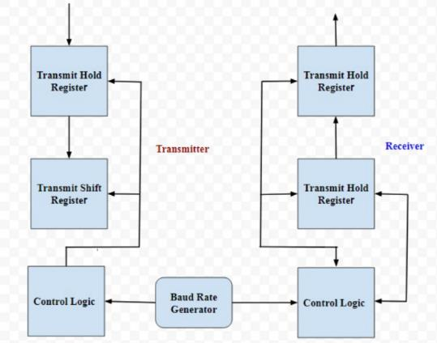
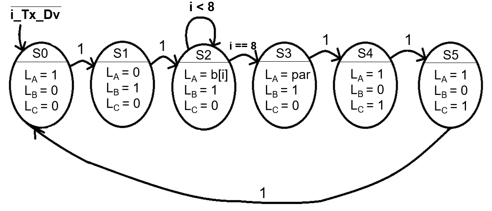
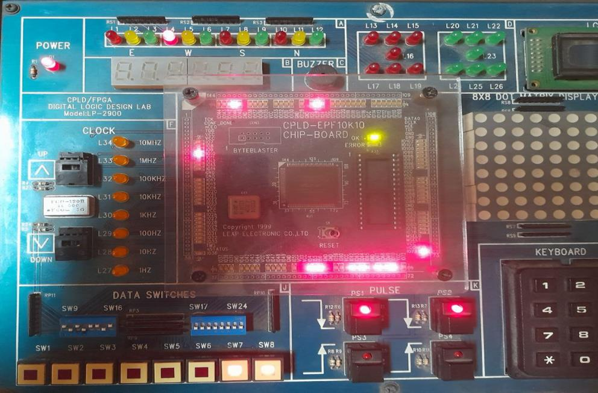
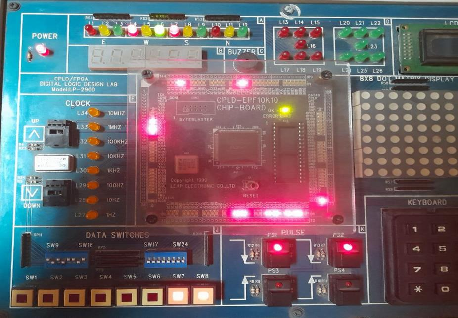
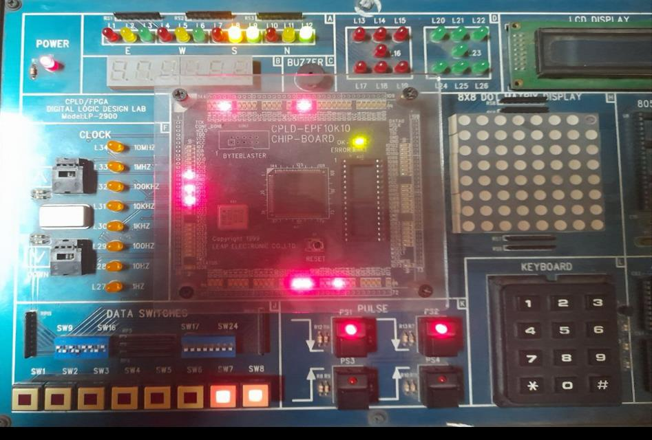
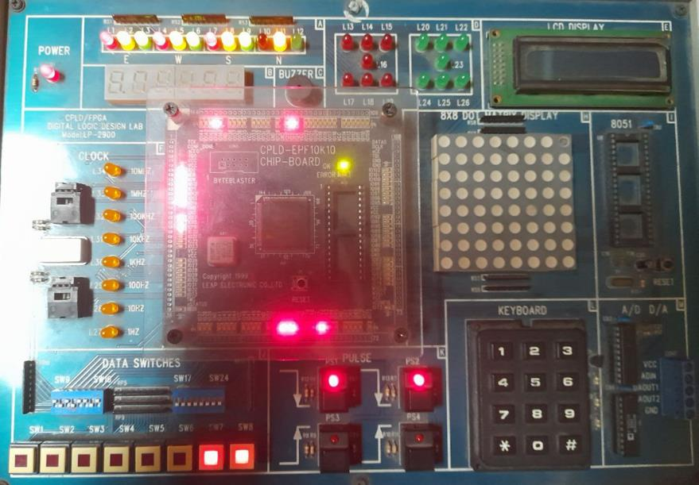
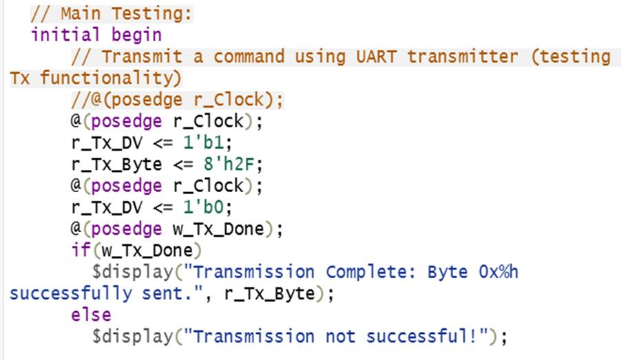
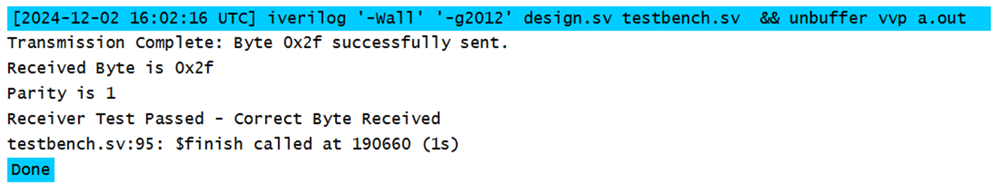

Digital Design · 2024
A UART transmitter and receiver with parity checking, written in Verilog and tested on a CPLD/FPGA trainer board
Two Moore finite state machines, one for transmit and one for receive, frame each byte with a start bit, eight data bits, a parity bit and a stop bit. The design was written in Quartus II, checked in a Verilog testbench, and then stepped through bit by bit on an EPF10K10 board. Group project for EEE 304, Digital Electronics Laboratory, BUET.








This is a teaching-lab UART, not a verified IP core. Baud rate is fixed at compile time through CLKS_PER_BIT, and no runtime baud selection, FIFO, framing-error flag or full-duplex test was built. Simulation covers a single byte (0x2F); the board test steps through one pattern in each direction by LED, so no error-rate or baud-sweep data is claimed. My part: CPLD testing and interpretation of results, within a team of five.